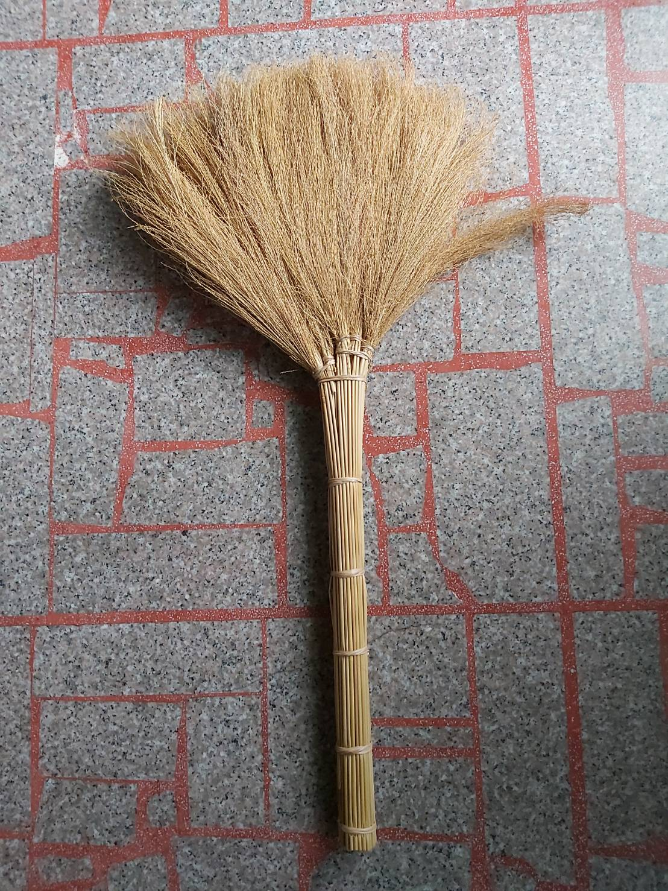

_.jpg)
Taiwan Broom — Tokyo Exhibition
Taiwan Broom — Tokyo Exhibition
這個臺灣掃帚的蒐集計畫，源自於我們長期在臺灣各地作田野，突然發現許多鄉鎮不使用都市中便宜耐用的塑膠掃帚，而是會就地取材用當地盛產植物，做出「不那麼耐用」的「自然掃帚」：有的曾經是當地產業；更多是自用或送人的簡單日用品。
無論是否有商業價值，這些掃帚都能說出很多當地故事，我們這些外地人，可以騎著這些掃帚飛進當地的脈絡，一窺當地的植物、人文、歷史各種面向。因為這樣，所以我們展開了全臺掃帚蒐集，並藉著這些掃帚展開當地故事，成為進入各個鄉村的藉口。
這個在2017年提出的構想，沉澱多年之後被日本知名的採購人山田遊先生提出邀請去他在東京所經營的畫廊展出。很感謝因為這個邀約，我們重訪了所有掃帚師傅。許多師傅其實都已經不再製作，但因為這次非常特別的邀請而重新拿出工具、重新步入山林採集植物、再次為展覽製作掃帚。讓這些原本只存在於臺灣鄉間、生命短暫、簡單但美麗的日用品重新被人看見。


01 — 槺榔掃帚


02 — 稻草掃帚


03 — 高粱掃帚


04 — 地膚草掃帚


05 — 貴黍掃帚


06 — 山棕掃帚


07 — 山棕嫩葉掃帚


08 — 蘆竹掃帚


09 — 芒草掃帚

地理分佈 — Distribution
清掃是家家戶戶的日常工事，臺灣各地都曾有以天然植物製成的傳統清潔用品，因地緣、歷史與植物分布，使得全臺各地製作出各式各樣不同植物的掃帚，這些天然清潔用具雖然只是生活的「枝微末節」，但它們的「技藝」與「記憶」都值得被認真看待。


No. 01
槺榔是臺灣特有種，據稱可以追溯自冰河時期，臺灣各地都有同音或類似發音的地名，都是因為槺榔這種植物的生長地。這種植物做出來的掃帚，都被視為有法力，可以清除不好的東西。臺灣各地廟內的清潔、神明出巡、神明護體都會用槺榔掃帚。


No. 02
臺灣農村文化象徵，全臺各地只要有生產稻米，都會在農閒時用無用的稻桿製作成掃帚。稻草掃帚主要用在曬稻穀的「埕」，不是為了清除乾淨、一塵不染，而是為了將石頭、雜草、稻殼與有價值的稻穀區分開——說是為了清潔，不如說是用於分類。


No. 03
高粱掃帚是臺灣金門與東部的特產，只要有高粱產地總會見到，顯示「就地取材」製作生活用品的核心生活法則。有趣的是，東部臺灣原住民愛用色彩鮮艷的紙箱束帶組成掃帚，金門來自中國大陸的移民喜歡採用更常見的塑膠繩，展現兩個族群不同的美學觀。


No. 04
一度為彰化西勢一地從日本時代就存在的主要產業，跟其他大部分只限當地使用的掃帚不同。從書籍出版到來日本展覽不到五年時間，這個村落世代相傳的產業幾乎已經消失，完全被更便宜的人工或工業塑膠掃帚所取代。


No. 05
也是來自日本的掃帚，不只技術甚至連植物都是，據稱是一位來自茨城的商人帶著技術與種子，要將整個掃帚生產基地帶來臺灣，因此訓練了一批專業師傅。這種掃帚技術偏向細緻編織，主要用於榻榻米空間，是一個全然的代工代表。


No. 06
山棕廣泛分布於臺灣全島平地至低海拔山區，跟臺灣原住民以及鄉村文化都密切相關。幾乎各民族都會充分利用山棕莖幹上所包覆的黑褐色纖維（棕毛），是臺灣文化中雨具的主要材料；有些地方則直接用巨大的葉柄製成掃帚，用來清潔大而廣的公共空間。


No. 07
山棕嫩葉掃帚屬於山棕掃帚的子類，師傅不取全植物、成熟植物製作，而是只取剛拔出的嫩葉，是田野調查中無意發現的獨特精緻路線。雖然用同樣植物，嫩葉較難取得，但成果使用更順手，也需要較細緻的手工。目前只發現一位具備各種原住民文化技藝、語言的老師傅在製作。


No. 08
蘆竹也是臺灣常見植物，全臺各地都有。蘆竹掃帚則是以前東勢庄（現在的桃園平鎮）的主要產業，甚至因此曾被稱為「掃把庄」。雖然這個產業已經沒落，師傅仍堅持讓掃帚送到日本時色澤、型態都要維持「好看」——這才讓我們知道師傅並不是將掃帚當作用過即丟的工具，而是一個本身具有美感的物件。



No. 09
到了冬天，臺灣山邊海邊，甚至河川邊都會出現芒草以及衍生出來的芒花觀賞活動，芒草掃帚也是這些芒草產地的重要產物。從漢人、客家人到原住民，這地方的住民都受自然啟發，忍不住動手讓芒草變成家中用品。


芒草，好長於乾燥的坡地，常見的品種有兩種，大約在十一月前後開花，開花結果後會呈現一片白茫茫的「白背芒」，與端午節前後開花的「五節芒」。在早期農業時代，芒草可用來圍籬笆、做建材、編織、入藥、綁掃把等，渾身都是寶。
然而，市面上卻少見芒草掃帚，過去趁農閒手工紮綁的掃帚多做為家用，或分送親朋好友，鮮少進入市場；工業化時代來臨，塑膠製品氾濫，費時費工的芒草掃帚也就更加珍貴、難尋了。
剛採割的芒草，花穗呈現白色、莖稈則是綠色，曬乾後則整株轉為黃褐色。嘉義縣樟樹湖的手作師傅簡黃秀切強調，芒草一定要曬到乾透才能綁。
紮綁時需挑選長短相當的芒草，先綁成四束，再分別將芒草束兩兩一組，綁成兩大束，過程中可用槌子將芒草束敲緊，最後再將兩大束收攏綁緊，完成掃毛部分。
接著再用葉鞘綁繩，將芒草稈綁成掃柄，視長短而定，分成四到五節綑綁，掃柄寬度以手掌可以圈握為準，可視情況修剪掉中央的芒草稈，以免掃柄太粗、不易握持。最後用刀子將柄端削齊，掃毛整理平順後，芒草掃帚就完成了。


槺榔是一種台灣原生的棕櫚科植物，本名為「臺灣海棗」。全臺多處留有以槺榔為名的地方，在日本時期的《臺灣樹木誌》中亦曾記載，槺榔是「臺灣全島低地皆屬常見」的植物，可窺見槺榔深入常民生活的痕跡。
槺榔的用途廣泛，幾乎全身上下都能充分利用，不僅可做景觀樹，木材可製作各類器皿，嫩芽及果實亦可加工食用，葉片曬乾後再經匠人巧手則成為一支支具有清潔及避邪意涵的掃帚。
槺榔掃帚又稱「天地掃」，顧名思義，天掃掃天，地掃掃地，天地掃需成對出現且不可混用。在臺灣習俗中，農曆十二月二十四日為送神日，也是「清屯日」——一年一度打掃神龕及祖先牌位的日子——天地掃即在此時發揮最大效用。
早在清朝時期，臺灣人就以槺榔葉製帚，《重修臺灣府志》（一七四七年）中有記載：「槺榔：幹直無枝，其顛生葉不過數十，結子作穗生木端，其葉臺人以為帚。」直到一九六〇年代，臺灣各地仍有不少村莊以綁槺榔掃帚為業。
嘉義縣朴子市的手作師傅涂梅花所製作的槺榔掃帚有三層結構，掃毛由槺榔葉主要擔當，以竹子做為骨架，再以乾稻草包覆製成掃柄。槺榔樹莖幹高大，有些能長到七、八公尺高，加上葉片有刺，採割並不容易。槺榔葉採割下來後必須曝曬多日風乾後，才能進行掃帚的製作。
製作槺榔掃帚的工具相當簡要：一捲鐵絲線、一把老虎鉗、一支鐵釘製成的鐵梳，再加上經歲月磨蝕的鍛造柴刀。散落一地的槺榔葉在涂梅花的揀選、收緊、綑綁、修剪之下，逐漸有了掃毛的樣子；接著，再將一根筆直的竹竿固定在掃毛上，以稻草包覆，一節一節地以鐵絲線圈綁固定，做成掃帚柄。最後，用柴刀將掃毛修剪整齊，再以鐵梳梳理，一把純手工打造的槺榔掃帚才算大功告成。


山棕是一種叢生的棕櫚科灌木植物，生長在潮濕溫暖的山麓或溪谷，因為常見且容易取材，與早期台灣的常民生活息息相關。山棕的嫩芽可入菜，葉柄可製糖；樹葉呈羽狀，成葉葉片多且葉面大，曬乾後可用來製作刷子或掃帚。
山棕掃帚是戶外掃除時常用的工具，以山棕葉製作的掃帚可分兩種：曬乾的成葉以及未出鞘的嫩葉。以成葉製作的山棕掃帚，長度約莫兩公尺，掃面也寬大，適合用在戶外清掃；以嫩葉製作的山棕掃帚，則顯得短小精幹，適合用在居家掃除。山棕掃帚需倒立收存，並保持乾燥通風，妥善保存的話，一把可用上三至五年。


高粱，禾本科的經濟作物，原產於非洲，耐乾旱、耐炎熱，是世界主要穀類作物之一。在臺灣每每提到高粱，就會想到金門高粱酒，事實上，高粱不只可以釀酒，也可提供食用、藥用及製作掃帚。
釀酒與製帚的高粱不盡相同，由於高粱的品種多元，近年來為了大面積耕作及收割，農民喜好種植低矮植株，不僅耐風，結穗量高且飽滿，適合用來釀酒。相較之下，傳統品種——植株高且結穗量少，則多用於製作掃帚，種植的人不多。
金門的手作師傅莊扶製作掃帚的材料是脫粒、曬乾、剝殼後的北掃紅高粱，掃毛及掃柄是用粉紅色的尼龍繩綑綁而成，呈現樸實的手感。掃毛由三束高粱、三次綑綁而成，呈現略微傾斜的扇形，以符合掃除使用時，手臂、掃帚與地面的角度；掃柄則是一體成型，可根據需求調整長短。
匠人所使用的工具十分特別，一條棉繩一端綁在較粗的木樁上，一端則是一根十幾公分長的木棍。雙腳抵在木樁上，一邊將木棍當成把手，用以拉緊棉繩，將高粱束束得緊實堅固，再用尼龍繩固定。最後將掃柄頂端修剪整齊，就完成一支純手工的高粱掃帚了。


稻米，是養活臺灣千萬人口的主要作物，也是出口外銷的重要農產品，曾讓臺灣獲得「稻米王國」的美稱。稻米餵飽了臺灣人，稻草則搖身一變成為農業社會裡，家家戶戶再利用的重要材料。
收割後的農田常見一束一束呈錐形站立的稻草束，這是農民「掌草」後的景觀，再經過大約二到五天的曝曬，等稻草曬乾後，堆成草垺做為儲備，形成另一幅農村風景。這些稻草的用途廣泛，不僅可以當作燃料、鋪設屋頂，或化身成守護農田的稻草人；也可以用來編織成草繩、草蓆、草鞋等生活用品，亦能綁成掃帚，成為居家必備的清掃工具。
宜蘭縣冬山鄉珍珠社區的手作師傅林秋女、藍豐穆，製作掃帚先以鐵絲或麻繩將稻草綑成數束，每束約十餘支。稻草掃帚是一體成型的，脫掉稻粒後的稻草前端為掃毛，沿著稻稈取一節一節綁成綑紮成掃柄。為了避免掃柄過粗，需修剪掉約二分之一的稻稈，調整成適合手握的寬度，再將五束稻草綑成一把，並將掃毛整理成扇狀，即成掃帚雛形。
接著，將麻繩一端固定在柱子上，一端則固定在方才綑好的稻草束上，雙手用力拉緊，再藉著柱子穩定的拉力，以掃毛上端為起點，將麻繩一圈一圈地綑上掃柄。綑的圈數越多，掃柄則越長，可根據使用者身高或需求彈性調整。最後再將掃柄頂端、掃毛末端分別修剪整齊，掃帚就大功告成。


山棕嫩葉有外鞘包覆，製帚前需費心處理，因此工序更顯繁瑣；且嫩葉數量相對稀少，材料取得不若成葉容易，嫩葉掃帚因而難以大量生產。
山棕嫩葉為一桿狀物，從外觀上難以「驗明正身」，需經過甩打使葉片出鞘，才能取得製帚的主要材料。取下葉片後再沿著脈絡撕開，並汰除太細、太小的嫩葉，再經數日曝曬後，葉片由嫩綠色轉為咖啡色，原料的準備才到一段落。
南投縣信義鄉的手作師傅布農族 Sa Vungaz（伍阿現），製作山棕嫩葉掃帚前準備的程序繁複，工具卻相當簡單。
「用山棕嫩葉綁製掃帚，只需一捲細繩和一把剪刀就夠了，用不到鐵絲，也不必動用老虎鉗。」Sa Vungaz 一邊說一邊將曬乾後的嫩葉暫時紮綁成束固定，再將成束的葉片一綹一綹分開，取一段較長的尼龍繩，做成環圈將葉片一一圈套收束，透過繩結將一綹一綹的葉片拉緊，最後形成一個完整扇面。
接著拆除頂端暫時固定的綁繩，再取另一段較長的尼龍繩重新紮綁，繩索環繞數十圈後，固定好就成為了掃帚柄；最後再以剪刀將尾端修剪整齊，即完成一把短柄且一體成型的山棕嫩葉掃帚。


蘆竹，台灣特有種，葉子長得像竹葉，喜好生長在岩壁、斜坡或石縫間，莖稈可長到一到二公尺高，海拔一千八百公尺以下地區都可見它的蹤影。蘆竹的纖維強韌，可用於造紙、編織、搭蓋屋頂等，或可綁製成掃帚，取材容易、用途廣泛。
相傳，東勢的掃帚傳奇是無心插柳，一位專事樟腦提煉、名叫張火石的人，順手將山上四處叢生的蘆竹綁成掃把，用來打掃工寮，沒想到蘆竹帚實惠耐用，因而在鄉里間流傳開來，紮綁掃帚遂成東勢一帶農閒時期的主要副業，後來發展出一波繁景，東勢成了「掃把庄」，蘆竹也因此被冠上「掃把草」之名。
不同於其他地方用竹篾或鐵絲做為綁繩，東勢的蘆竹掃帚師傅曾義深是以月桃製成綁繩。月桃是農村常見的植物，紮綁掃帚所使用的部位是「葉鞘纖維」——先除去月桃葉子，再用木槌敲打葉鞘，將鞘皮纖維撕開之後曬乾，就成了用來綁掃帚的繩子了。
除了蘆竹及月桃，還要砍竹子、削製「竹籤」，每支掃帚需要二支不同長短的竹籤，寬約二公分，一端尖一端平，長的約三十五公分，用來加強掃柄強度；短的約十公分，插進綁紮處，用來增加掃帚撐持硬度。
蘆竹及月桃都需經過三日的曝曬才能進行掃帚綁製，蘆竹曬乾後先摘除老葉，葉桿做為掃柄，尾端嫩葉則成掃毛。師傅先取長度相當的蘆竹，以月桃捻繩綁成束，一共五束。接著，用柴刀刀背將兩把蘆竹束敲緊，以月桃繩綁緊，再加入一把，重複工序，直到五把蘆竹束被固定在一起，即完成掃毛。
然後將葉桿平均間隔，以月桃繩綑綁五段，做成掃柄。再以柴刀削齊柄端，將掃毛修剪成圓弧扇形。最後將長竹籤敲入掃柄，短竹籤敲進掃毛紮綁處，成為支撐的骨架，一把蘆竹掃帚就此大功告成。


貴黍，又稱為「掃把草」，外觀貌似高粱與玉米，每年春天播種，兩個月就能採收，果實成熟時大小與稻米差不多，呈現紫黑色，曬乾可做為飼料，莖稈日曬乾燥可綁成掃帚。貴黍掃帚是日本榻榻米空間文化衍生的重要元素，承載日本傳統祭儀、婚喪喜慶的文化象徵意義。隨著日本本土栽種成本提高，日本人遂將貴黍引進台灣，一度成為嘉南平原大量栽種的經濟作物。
據嘉義六腳地區的楊福藏表示，大約在一九七〇年代，日本人將貴黍種子引進台灣，看中的是台灣合適的氣候與地理環境。因為獲利高，六腳農民紛紛改種。「最盛時期，全庄都在，隔壁庄也種，大概有幾百公頃。」楊福藏是當時的收購商，專門收購農民採收、曬乾後的貴黍，再將它轉運出口到日本。
手作師傅呂春梅製作貴黍掃帚是使用脫穀後曬乾的貴黍，綁一支的時間大概一個小時，工序十分繁複。製帚時，師傅需坐在一張低矮的小板凳上，右腳抵住另一張倒置的長板凳，長板凳的椅腳上繞了一捲黑色尼龍繩，透過長板凳與匠人的來回拉扯將掃毛束緊。
成品掃帚的掃毛上端呈現不對稱設計，一邊有配色鮮明的平紋花樣，一邊則根據掃帚尺寸，為二至三個球型。如此精緻的造型來自於掃帚師傅的巧手，精巧地將三種材料——乾貴黍、經過裁剪的貴黍稈，以及過水的濕貴黍——編織在一起。
在製作平紋花樣的掃毛束時，師傅以乾貴黍為經，尼龍繩為緯，一邊計算黍稈的單、雙數，「跳目」進行編織。製作球型掃毛束時，則以裁剪過的貴黍稈包覆乾貴黍，再以尼龍繩束緊，製造出玲瓏有致的腰身。掃毛固定完成後，接著修剪掉上端多餘的貴黍稈，將外圈往下折，再以「香蕉刀」俐落地削除內圈貴黍稈，將斷口修成圓弧狀，聚攏後束緊成為掃柄。最後以紅色尼龍繩在掃毛上編出一圈具有裝飾及固定功能的編結，貴黍掃帚就此大功告成。


地膚，一年生的草本植物，常生長於田邊、路旁或荒地，是一種生命力強韌的植物。有些人會食用它的莖枝，但更多時候是將它曬乾、綁成掃帚，提供日常清掃使用，因此，地膚草又被稱作掃帚苗、掃帚草。
在彰化福興鄉西勢村，因為靠海且氣候乾燥、土壤鹽化，無法種植一般糧食作物，農民為了謀求生路，將海邊、旱地長出的地膚草曬乾、紮綁成掃把到各地兜售，逐漸形成產業，支撐經濟命脈，進而獲得「掃帚之鄉」之美名。
地膚草收成後，須先將地膚草直接紮成束，立在田裡曬乾，大概需要四到七天，且須時常翻面，讓草束均勻曝曬。曬乾後的地膚草並不是直接用來綁掃帚，得先「取籽」留待第二次種植。過去是將地膚草甩打在長板凳上，而今改以貨車碾壓，使其種籽脫落。接著，師傅們會費心處理乾草，汰除雜枝蔓生的、長短不一的部分，才算完成第一階段的材料整理。
手作師傅黃張環綁地膚草掃帚時是席地而坐的，並將一端繫有短木棍的白色棉繩固定在柱子或穩定的椅腳上，過程中得借助柱子的拉力來綑緊草束。就定位後，師傅先用棉繩將第一束地膚草束緊，再用紅色尼龍繩綁好，反覆同樣的工序四次，綁繩不重疊。接著再將草稈分三到五段綑緊，做成掃柄，過程中會視情況再添加草稈，加強掃柄的強度。
接著，用剪刀修剪掉旁生的雜枝及掃毛，再以鍘刀將掃柄頂端、掃毛末段修齊，最後用手把掃毛梳理平整，一把地膚帚就完成了。